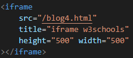
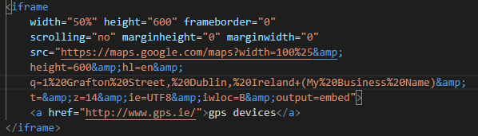
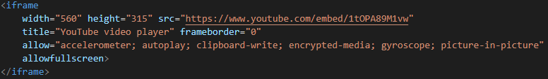

This week I have learned about the iframe tag on html. Iframe tags allow you to display webpages from a web page. Confusing right? Let take a look at an example.
HTML CODE:
RESULT:
The above example is displaying blog 4, which is a webpage.
With this we can do cool thing like display google maps.
HTML CODE:
RESULT:
This so cool! I always thought this was done with javascript. The power of html surprises me. This tag can be so use full for businesses to display a map their location.
Another cool thing we can do with the iframe tag is embed youtube videos like this:
HTML CODE:
RESULT:
The second part of the video shows San Pedro Sula, the city I was born.
I learned about the iframe tag on w3schools